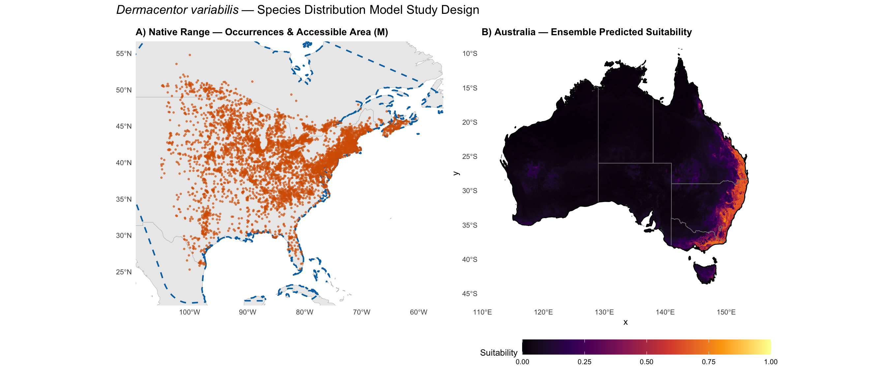
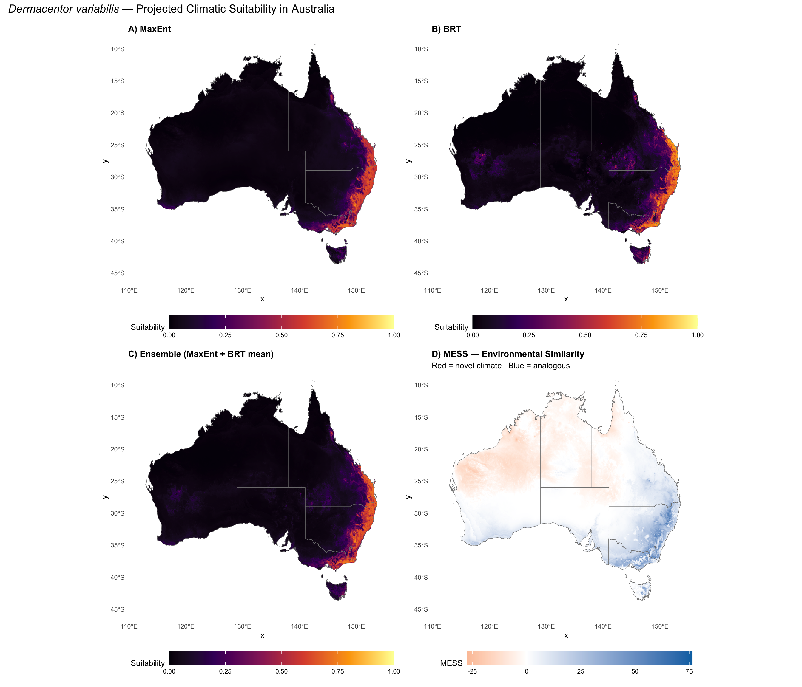
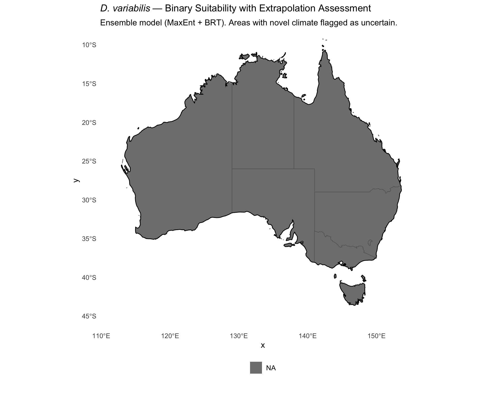

library(tidyverse)
library(terra)
library(sf)
library(rnaturalearth)
library(rnaturalearthdata)
library(patchwork)
library(viridis)Step 9: Final Visualization and Results
Dermacentor variabilis Species Distribution Model
Overview
This script generates publication-quality figures and a comprehensive results summary for the D. variabilis SDM. All figures use a consistent style and are saved at 300 DPI.
1. Load all results
base_dir <- "~/Library/CloudStorage/OneDrive-CSIRO/OneDrive - Docs/01_Projects/SDM/Dvariabilis_SDM"
processed_dir <- file.path(base_dir, "processed_data")
figures_dir <- file.path(base_dir, "figures")
outputs_dir <- file.path(base_dir, "outputs")
dir.create(outputs_dir, showWarnings = FALSE)
# Occurrence data
occ <- readRDS(file.path(processed_dir, "occurrences_thinned.rds"))
bg <- readRDS(file.path(processed_dir, "background_coords.rds"))
# Models and metadata
maxent_metadata <- readRDS(file.path(processed_dir, "selected_model_metadata.rds"))
brt_metadata <- readRDS(file.path(processed_dir, "brt_model_metadata.rds"))
thresholds <- readRDS(file.path(processed_dir, "model_thresholds.rds"))
# Predictions
pred_aus_maxent <- rast(file.path(processed_dir, "pred_aus_maxent.tif"))
pred_aus_brt <- rast(file.path(processed_dir, "pred_aus_brt.tif"))
pred_aus_ensemble <- rast(file.path(processed_dir, "pred_aus_ensemble.tif"))
pred_M_maxent <- rast(file.path(processed_dir, "pred_M_maxent.tif"))
mess_aus <- rast(file.path(processed_dir, "mess_australia.tif"))
# Niche results
niche_results <- readRDS(file.path(processed_dir, "niche_analysis_results.rds"))
# Area summary
area_summary <- read_csv(file.path(processed_dir, "suitable_area_summary.csv"),
show_col_types = FALSE)
# Variable importance
maxent_imp <- read_csv(file.path(processed_dir, "variable_importance_final.csv"),
show_col_types = FALSE)
brt_imp <- read_csv(file.path(processed_dir, "brt_variable_importance.csv"),
show_col_types = FALSE)
# Model comparison
model_comparison <- read_csv(file.path(processed_dir, "model_comparison.csv"),
show_col_types = FALSE)
# Spatial data
aus <- ne_countries(country = "Australia", scale = "medium", returnclass = "sf")
states <- ne_states(country = "Australia", returnclass = "sf")
world <- ne_countries(scale = "medium", returnclass = "sf")
M <- readRDS(file.path(processed_dir, "accessible_area_M.rds"))2. Figure 1 — Study design overview (occurrences + M + Australia)
occ_sf <- st_as_sf(occ, coords = c("decimalLongitude", "decimalLatitude"), crs = 4326)
M_sf <- st_as_sf(M)
# Panel A: Native range with occurrences and M
p_native <- ggplot() +
geom_sf(data = world, fill = "grey92", colour = "grey70", linewidth = 0.15) +
geom_sf(data = M_sf, fill = NA, colour = "#0072B2", linewidth = 0.8, linetype = "dashed") +
geom_sf(data = occ_sf, colour = "#D55E00", size = 0.6, alpha = 0.6) +
coord_sf(xlim = c(-107, -58), ylim = c(22, 55)) +
labs(title = "A) Native Range — Occurrences & Accessible Area (M)") +
theme_minimal(base_size = 10) +
theme(panel.grid = element_blank(), plot.title = element_text(face = "bold", size = 11))
# Panel B: Australia projection extent
aus_maxent_df <- as.data.frame(pred_aus_ensemble, xy = TRUE) %>%
filter(!is.na(ensemble_suitability))
p_aus <- ggplot() +
geom_raster(data = aus_maxent_df, aes(x = x, y = y, fill = ensemble_suitability)) +
geom_sf(data = states, fill = NA, colour = "grey50", linewidth = 0.3) +
geom_sf(data = aus, fill = NA, colour = "black", linewidth = 0.5) +
scale_fill_viridis_c(option = "inferno", limits = c(0, 1), name = "Suitability") +
coord_sf(xlim = c(112, 155), ylim = c(-45, -10)) +
labs(title = "B) Australia — Ensemble Predicted Suitability") +
theme_minimal(base_size = 10) +
theme(panel.grid = element_blank(), plot.title = element_text(face = "bold", size = 11),
legend.position = "bottom", legend.key.width = unit(2, "cm"))
fig1 <- p_native + p_aus +
plot_annotation(
title = expression(italic("Dermacentor variabilis") ~
"— Species Distribution Model Study Design"),
theme = theme(plot.title = element_text(size = 14, face = "bold"))
)
ggsave(file.path(figures_dir, "fig1_study_design.png"),
fig1, width = 14, height = 6, dpi = 300)
fig1
3. Figure 2 — Model comparison (MaxEnt vs BRT suitability)
maxent_df <- as.data.frame(pred_aus_maxent, xy = TRUE) %>% filter(!is.na(maxent_suitability))
brt_df <- as.data.frame(pred_aus_brt, xy = TRUE) %>% filter(!is.na(brt_suitability))
mess_df <- as.data.frame(mess_aus, xy = TRUE) %>% filter(!is.na(mess))
map_theme <- theme_minimal(base_size = 10) +
theme(panel.grid = element_blank(),
plot.title = element_text(face = "bold", size = 11),
legend.position = "bottom", legend.key.width = unit(2, "cm"))
p_maxent <- ggplot() +
geom_raster(data = maxent_df, aes(x = x, y = y, fill = maxent_suitability)) +
geom_sf(data = states, fill = NA, colour = "grey50", linewidth = 0.2) +
scale_fill_viridis_c(option = "inferno", limits = c(0, 1), name = "Suitability") +
coord_sf(xlim = c(112, 155), ylim = c(-45, -10)) +
labs(title = "A) MaxEnt") + map_theme
p_brt <- ggplot() +
geom_raster(data = brt_df, aes(x = x, y = y, fill = brt_suitability)) +
geom_sf(data = states, fill = NA, colour = "grey50", linewidth = 0.2) +
scale_fill_viridis_c(option = "inferno", limits = c(0, 1), name = "Suitability") +
coord_sf(xlim = c(112, 155), ylim = c(-45, -10)) +
labs(title = "B) BRT") + map_theme
p_ensemble <- ggplot() +
geom_raster(data = aus_maxent_df, aes(x = x, y = y, fill = ensemble_suitability)) +
geom_sf(data = states, fill = NA, colour = "grey50", linewidth = 0.2) +
scale_fill_viridis_c(option = "inferno", limits = c(0, 1), name = "Suitability") +
coord_sf(xlim = c(112, 155), ylim = c(-45, -10)) +
labs(title = "C) Ensemble (MaxEnt + BRT mean)") + map_theme
p_mess <- ggplot() +
geom_raster(data = mess_df, aes(x = x, y = y, fill = mess)) +
geom_sf(data = states, fill = NA, colour = "grey50", linewidth = 0.2) +
scale_fill_gradient2(low = "#D55E00", mid = "white", high = "#0072B2",
midpoint = 0, name = "MESS") +
coord_sf(xlim = c(112, 155), ylim = c(-45, -10)) +
labs(title = "D) MESS — Environmental Similarity",
subtitle = "Red = novel climate | Blue = analogous") +
map_theme
fig2 <- (p_maxent + p_brt) / (p_ensemble + p_mess) +
plot_annotation(
title = expression(italic("Dermacentor variabilis") ~
"— Projected Climatic Suitability in Australia"),
theme = theme(plot.title = element_text(size = 14, face = "bold"))
)
ggsave(file.path(figures_dir, "fig2_australia_suitability.png"),
fig2, width = 14, height = 12, dpi = 300)
fig2
4. Figure 3 — Binary suitability with MESS mask
# Create binary ensemble with MESS mask
ensemble_thresh <- mean(thresholds$maxent$maxss, thresholds$brt$maxss)
ensemble_binary <- pred_aus_ensemble >= ensemble_thresh
mess_mask <- mess_aus >= 0
# Create a categorical raster: 0 = unsuitable, 1 = suitable (analogous), 2 = novel climate
suitability_cat <- ensemble_binary
suitability_cat[mess_mask == 0 & ensemble_binary == 1] <- 2 # Suitable but extrapolated
suitability_cat[mess_mask == 0 & ensemble_binary == 0] <- 3 # Unsuitable and extrapolated
cat_df <- as.data.frame(suitability_cat, xy = TRUE)
names(cat_df)[3] <- "category"
cat_df <- cat_df %>%
filter(!is.na(category)) %>%
mutate(category = factor(category,
levels = c(0, 1, 2, 3),
labels = c("Unsuitable (analogous climate)",
"Suitable (analogous climate)",
"Suitable (novel climate — uncertain)",
"Unsuitable (novel climate)")
))
fig3 <- ggplot() +
geom_raster(data = cat_df, aes(x = x, y = y, fill = category)) +
geom_sf(data = states, fill = NA, colour = "grey40", linewidth = 0.3) +
geom_sf(data = aus, fill = NA, colour = "black", linewidth = 0.5) +
scale_fill_manual(
values = c(
"Unsuitable (analogous climate)" = "grey85",
"Suitable (analogous climate)" = "#D55E00",
"Suitable (novel climate — uncertain)" = "#E69F00",
"Unsuitable (novel climate)" = "grey95"
),
name = NULL
) +
coord_sf(xlim = c(112, 155), ylim = c(-45, -10)) +
labs(
title = expression(italic("D. variabilis") ~
"— Binary Suitability with Extrapolation Assessment"),
subtitle = "Ensemble model (MaxEnt + BRT). Areas with novel climate flagged as uncertain."
) +
theme_minimal(base_size = 12) +
theme(
panel.grid = element_blank(),
plot.title = element_text(face = "bold", size = 14),
legend.position = "bottom",
legend.text = element_text(size = 10)
) +
guides(fill = guide_legend(nrow = 2))
ggsave(file.path(figures_dir, "fig3_binary_suitability_mess.png"),
fig3, width = 10, height = 8, dpi = 300)
fig3
5. Results summary tables
# Table 1: Model comparison
cat("=== TABLE 1: Model Performance Comparison ===\n")
print(model_comparison, n = Inf)
# Table 2: Variable importance
cat("\n=== TABLE 2: Variable Importance ===\n")
imp_combined <- maxent_imp %>%
dplyr::select(variable, percent.contribution, permutation.importance) %>%
rename(maxent_contribution = percent.contribution,
maxent_permutation = permutation.importance) %>%
left_join(
brt_imp %>% rename(brt_relative_influence = relative_influence),
by = "variable"
) %>%
arrange(desc(maxent_permutation))
print(imp_combined, n = Inf)
# Table 3: Area of suitable habitat
cat("\n=== TABLE 3: Suitable Habitat Area in Australia ===\n")
print(area_summary, n = Inf)
# Table 4: Niche analysis results
cat("\n=== TABLE 4: Niche Analysis ===\n")
niche_summary <- read_csv(file.path(processed_dir, "niche_overlap_summary.csv"),
show_col_types = FALSE)
print(niche_summary, n = Inf)
# Save all tables
write_csv(model_comparison, file.path(outputs_dir, "table1_model_comparison.csv"))
write_csv(imp_combined, file.path(outputs_dir, "table2_variable_importance.csv"))
write_csv(area_summary, file.path(outputs_dir, "table3_suitable_area.csv"))
write_csv(niche_summary, file.path(outputs_dir, "table4_niche_analysis.csv"))=== TABLE 1: Model Performance Comparison ===
# A tibble: 8 × 3
Metric MaxEnt BRT
<chr> <dbl> <dbl>
1 Training AUC 0.851 0.888
2 Validation AUC (CV) 0.824 0.591
3 Boyce Index 1 1
4 MaxSS Threshold 0.499 0.521
5 TSS at MaxSS 0.565 0.629
6 Sensitivity at MaxSS 0.848 0.888
7 Specificity at MaxSS 0.718 0.741
8 10% Training Presence Threshold 0.428 0.494
=== TABLE 2: Variable Importance ===
# A tibble: 5 × 4
variable maxent_contribution maxent_permutation brt_relative_influence
<chr> <dbl> <dbl> <dbl>
1 bio1 45.3 35.3 25.9
2 aridity_idx 39.1 27.5 31.5
3 bio15 8.95 22.0 26.9
4 bio12 2.59 10.9 8.02
5 bio7 4.02 4.34 7.72
=== TABLE 3: Suitable Habitat Area in Australia ===
# A tibble: 5 × 3
model suitable_area_km2 pct_australia
<chr> <dbl> <dbl>
1 MaxEnt 217704. 2.8
2 MaxEnt (MESS-masked) 217704. 2.8
3 BRT 223710. 2.9
4 BRT (MESS-masked) 223614. 2.9
5 Ensemble 225804. 2.9
=== TABLE 4: Niche Analysis ===
# A tibble: 5 × 2
metric value
<chr> <dbl>
1 Schoener's D 0.272
2 Warren's I 0.490
3 Equivalency p-value 0.000999
4 Similarity p-value (Native->Aus) 0.177
5 Similarity p-value (Aus->Native) 0.107 6. Comprehensive results summary
cat("================================================================\n")
cat(" SPECIES DISTRIBUTION MODEL RESULTS SUMMARY\n")
cat(" Dermacentor variabilis — Climatic Suitability for Australia\n")
cat("================================================================\n\n")
cat("RESEARCH QUESTION:\n")
cat("If D. variabilis were introduced to Australia, does Australia have\n")
cat("the climatic conditions required for the species to survive?\n\n")
cat("DATA:\n")
cat(sprintf(" Occurrence records: %d (GBIF, thinned to 10 km, eastern N. America)\n", nrow(occ)))
cat(sprintf(" Background points: %d (Ixodidae target-group from GBIF)\n", nrow(bg)))
cat(sprintf(" Environmental variables: %d selected from %d candidates\n",
length(maxent_metadata$variables),
length(readLines(file.path(processed_dir, "candidate_variables.txt")))))
cat(" Variables:", paste(maxent_metadata$variables, collapse = ", "), "\n\n")
cat("MODEL PERFORMANCE:\n")
cat(sprintf(" MaxEnt: fc=%s, rm=%s, AUC_train=%.3f, AUC_val=%.3f\n",
maxent_metadata$feature_class, maxent_metadata$reg_multiplier,
maxent_metadata$auc_train, maxent_metadata$auc_val))
cat(sprintf(" BRT: %d trees, tc=%d, CV_cor=%.3f\n",
brt_metadata$n_trees, brt_metadata$tree_complexity,
brt_metadata$cv_correlation))
cat("\nPROJECTION TO AUSTRALIA:\n")
print(area_summary, n = Inf)
mess_vals <- values(mess_aus, na.rm = TRUE)
pct_novel <- round(100 * sum(mess_vals < 0) / length(mess_vals), 1)
cat(sprintf("\n MESS: %.1f%% of Australia has novel climate (MESS < 0)\n", pct_novel))
cat("\nNICHE ANALYSIS:\n")
cat(sprintf(" Schoener's D: %.3f\n", niche_results$overlap$D))
cat(sprintf(" Warren's I: %.3f\n", niche_results$overlap$I))
cat(sprintf(" Equivalency test p-value: %.4f\n", niche_results$equivalency$p_D))
cat(sprintf(" Similarity test p-value: %.4f\n", niche_results$similarity_native_to_aus$p_D))
cat("\n================================================================\n")
cat(" END OF RESULTS SUMMARY\n")
cat("================================================================\n")================================================================
SPECIES DISTRIBUTION MODEL RESULTS SUMMARY
Dermacentor variabilis — Climatic Suitability for Australia
================================================================
RESEARCH QUESTION:
If D. variabilis were introduced to Australia, does Australia have
the climatic conditions required for the species to survive?
DATA:
Occurrence records: 4580 (GBIF, thinned to 10 km, eastern N. America)
Background points: 10000 (Ixodidae target-group from GBIF)
Environmental variables: 5 selected from 21 candidates
Variables: aridity_idx, bio1, bio12, bio15, bio7
MODEL PERFORMANCE:
MaxEnt: fc=LQH, rm=1, AUC_train=0.851, AUC_val=0.824
BRT: 3800 trees, tc=5, CV_cor=0.591
PROJECTION TO AUSTRALIA:
# A tibble: 5 × 3
model suitable_area_km2 pct_australia
<chr> <dbl> <dbl>
1 MaxEnt 217704. 2.8
2 MaxEnt (MESS-masked) 217704. 2.8
3 BRT 223710. 2.9
4 BRT (MESS-masked) 223614. 2.9
5 Ensemble 225804. 2.9
MESS: 42.2% of Australia has novel climate (MESS < 0)
NICHE ANALYSIS:
Schoener's D: 0.272
Warren's I: 0.490
Equivalency test p-value: 0.0010
Similarity test p-value: 0.1768
================================================================
END OF RESULTS SUMMARY
================================================================7. Save final results object
# Comprehensive results object
final_results <- list(
species = "Dermacentor variabilis",
n_occurrences = nrow(occ),
n_background = nrow(bg),
selected_variables = maxent_metadata$variables,
maxent = maxent_metadata,
brt = brt_metadata,
thresholds = thresholds,
area_summary = area_summary,
niche_analysis = niche_results,
mess_pct_novel = pct_novel
)
saveRDS(final_results, file.path(outputs_dir, "final_results.rds"))
sprintf("All results and figures saved to outputs/ and figures/")[1] "All results and figures saved to outputs/ and figures/"